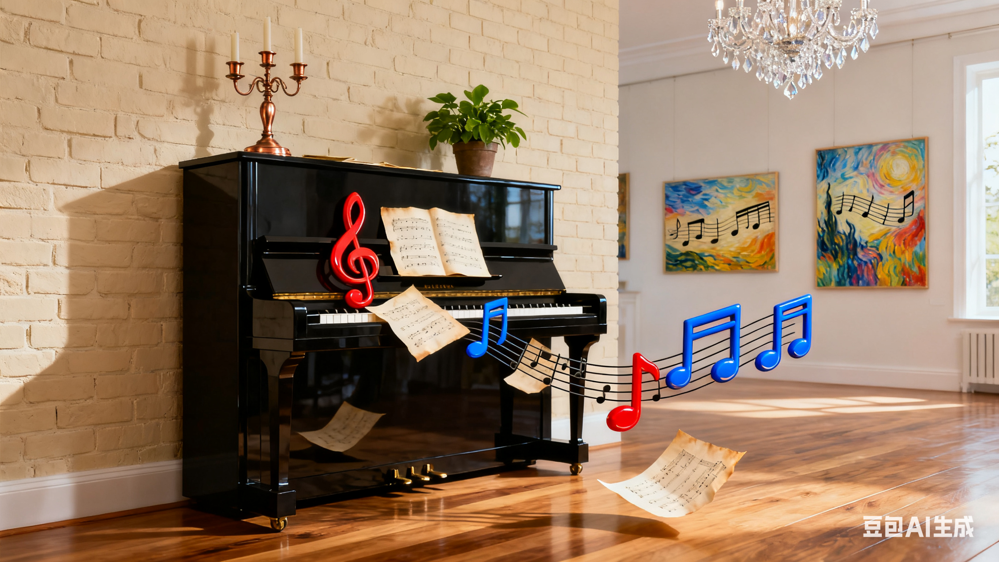

社团简介 | 活动安排 | 风采展示 | 社员故事 | 在线报名
校园钢琴社成立于 2015 年，是学校内最具人气的文艺类学生社团之一。 社团以钢琴为核心载体，组织练琴打卡、独奏合奏、钢琴音乐会、乐理分享等多种形式的活动， 为热爱钢琴与古典/流行音乐的同学提供一个交流学习、展示自我的优质平台。
无论你是零乐理基础的新手，还是已能流畅演奏经典曲目的进阶玩家， 只要对钢琴和音乐有热爱，都欢迎加入钢琴社。 社团会安排专业学长学姐一对一帮带，从手型、指法、节奏到情感表达逐步指导，帮助大家快速提升。
社团平时的活动地点主要在学生活动中心的钢琴教室（配备立式/三角钢琴）， 每周会安排固定的练习时段和集体指导时间，也会根据演出需求加练， 为校园艺术节、专场音乐会等活动储备精彩节目。
为了让大家更好地了解钢琴社的日常，本学期计划安排如下几项主要活动。 具体时间可能会根据学校统一安排略作调整，详情请关注社团通知。
| 钢琴社 2025 年春季学期活动安排表 | |||
|---|---|---|---|
| 活动名称 | 活动时间 | 活动地点 | 负责人 |
| 新成员见面会 | 3 月第 2 周 周五晚 | 学生活动中心 钢琴教室 302 | 陈悦 |
| 钢琴基础教学公开课（手型+入门曲目） | 3 月第 3 周 周六下午 | 林泽宇 | |
| “春日琴音”小型独奏/四手联弹专场 | 4 月第 2 周 周日 | 学生活动中心 多功能厅 | 赵思雅 |
| 期末钢琴音乐会（经典+流行曲目展演） | 6 月第 1 周 周六晚 | 大学生活动中心 大礼堂 | 周明轩 |
上表仅列出了部分代表性活动，日常还会有乐理分享会、经典曲目赏析、即兴演奏交流等小型活动， 欢迎有想法、有创意的同学参与策划。
下面是一张往届钢琴音乐会的照片示意。点击图片，可以查看更详细的活动介绍页面。 在实际使用中，请根据自己的图片文件名进行修改。
图中为上学期“冬日恋歌”钢琴音乐会上，社团成员演奏经典曲目《致爱丽丝》的场景。 平时的系统训练与排练，都会在正式演出中转化为打动人心的舞台表现。
下面示例演示如何在页面中嵌入一段钢琴社宣传视频（可使用之前规划的 5 秒快剪视频）。 如果暂时没有真实的视频文件，可以先保留代码结构，待以后再替换为真实文件路径。
小宋大一加入钢琴社时，连五线谱都认不全，更别提弹奏技巧。 在学姐的耐心指导下，他从最基础的音符识别、手型矫正练起， 每天利用课余时间泡在钢琴教室练习 1-2 小时，周末还会参加社团的集体练琴打卡。 一个学年之后，他已经能够流畅演奏《卡农》《菊次郎的夏天》等经典曲目， 并在校园艺术节上完成了自己的独奏首秀，赢得全场掌声。
小杨性格内向，刚入学时常常感到孤单。加入钢琴社后，她发现这里的每个人都因音乐而温暖。 大家一起讨论曲目处理、分享练琴难题，偶尔还会组队练习四手联弹。 一次社团内部的小型汇报中，她和搭档合作演奏了《一步之遥》， 台下的鼓励与认可让她逐渐打开心扉，不仅钢琴水平稳步提升，还收获了一群志同道合的挚友。
很多社员表示，加入钢琴社最大的收获不仅是演奏技巧的提升，更是对音乐认知的拓宽。 在这里，不仅能接触古典钢琴的典雅，还能尝试流行歌曲改编、影视配乐弹奏， 甚至和其他社团合作跨界演出。大家一起扒谱、编曲、排练， 在忙碌的学业之外，拥有了一片纯粹的音乐净土。
如果你也向往指尖流淌旋律的美好，期望在校园生活中留下与钢琴相关的珍贵回忆， 欢迎加入我们，一起在黑白琴键上谱写青春乐章。
请认真填写以下信息，确保联系方式准确无误。 提交后，社团会通过电话或短信的方式通知面谈及试音（基础摸底）时间。
提交表单后，如需修改信息，可以再次填写并提交最新的一份。
校园钢琴社 · 2025 招新示例网页（教学参考用）
本页面仅作为 HTML 基础实验的示例代码。